To cite package 'dlookr' in publications use:
Choonghyun Ryu (2020). dlookr: Tools for Data Diagnosis,
Exploration, Transformation. R package version 0.3.14.
https://CRAN.R-project.org/package=dlookr
A BibTeX entry for LaTeX users is
@Manual{,
title = {dlookr: Tools for Data Diagnosis, Exploration, Transformation},
author = {Choonghyun Ryu},
year = {2020},
note = {R package version 0.3.14},
url = {https://CRAN.R-project.org/package=dlookr},
}Diagnose your data
Diagnosing data quality means checking …
# A tibble: 6 x 6
variables types missing_count missing_percent unique_count
<chr> <chr> <int> <dbl> <int>
1 Ozone inte… 37 24.2 68
2 Solar.R inte… 7 4.58 118
3 Wind nume… 0 0 31
4 Temp inte… 0 0 40
5 Month inte… 0 0 5
6 Day inte… 0 0 31
# … with 1 more variable: unique_rate <dbl># A tibble: 20 x 6
variables levels N freq ratio rank
<chr> <ord> <int> <int> <dbl> <int>
1 cut Ideal 53940 21551 40.0 1
2 cut Premium 53940 13791 25.6 2
3 cut Very Good 53940 12082 22.4 3
4 cut Good 53940 4906 9.10 4
5 cut Fair 53940 1610 2.98 5
6 color G 53940 11292 20.9 1
7 color E 53940 9797 18.2 2
8 color F 53940 9542 17.7 3
9 color H 53940 8304 15.4 4
10 color D 53940 6775 12.6 5
11 color I 53940 5422 10.1 6
12 color J 53940 2808 5.21 7
13 clarity SI1 53940 13065 24.2 1
14 clarity VS2 53940 12258 22.7 2
15 clarity SI2 53940 9194 17.0 3
16 clarity VS1 53940 8171 15.1 4
17 clarity VVS2 53940 5066 9.39 5
18 clarity VVS1 53940 3655 6.78 6
19 clarity IF 53940 1790 3.32 7
20 clarity I1 53940 741 1.37 8# A tibble: 7 x 10
variables min Q1 mean median Q3 max zero minus
<chr> <dbl> <dbl> <dbl> <dbl> <dbl> <dbl> <int> <int>
1 carat 0.2 0.4 7.98e-1 0.7 1.04e0 5.01e0 0 0
2 depth 43 61 6.17e+1 61.8 6.25e1 7.90e1 0 0
3 table 43 56 5.75e+1 57 5.90e1 9.50e1 0 0
4 price 326 950 3.93e+3 2401 5.32e3 1.88e4 0 0
5 x 0 4.71 5.73e+0 5.7 6.54e0 1.07e1 8 0
6 y 0 4.72 5.73e+0 5.71 6.54e0 5.89e1 7 0
7 z 0 2.91 3.54e+0 3.53 4.04e0 3.18e1 20 0
# … with 1 more variable: outlier <int># A tibble: 7 x 6
variables outliers_cnt outliers_ratio outliers_mean with_mean
<chr> <int> <dbl> <dbl> <dbl>
1 carat 1889 3.50 2.15 0.798
2 depth 2545 4.72 61.2 61.7
3 table 605 1.12 64.8 57.5
4 price 3538 6.56 14945. 3933.
5 x 32 0.0593 7.24 5.73
6 y 29 0.0538 9.77 5.73
7 z 49 0.0908 4.05 3.54
# … with 1 more variable: without_mean <dbl># A tibble: 7 x 6
variables outliers_cnt outliers_ratio outliers_mean with_mean
<chr> <int> <dbl> <dbl> <dbl>
1 carat 1889 3.50 2.15 0.798
2 depth 2545 4.72 61.2 61.7
3 table 605 1.12 64.8 57.5
4 price 3538 6.56 14945. 3933.
5 x 32 0.0593 7.24 5.73
6 y 29 0.0538 9.77 5.73
7 z 49 0.0908 4.05 3.54
# … with 1 more variable: without_mean <dbl>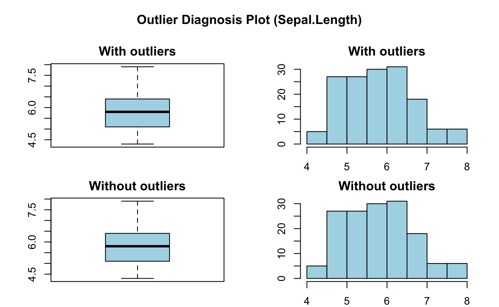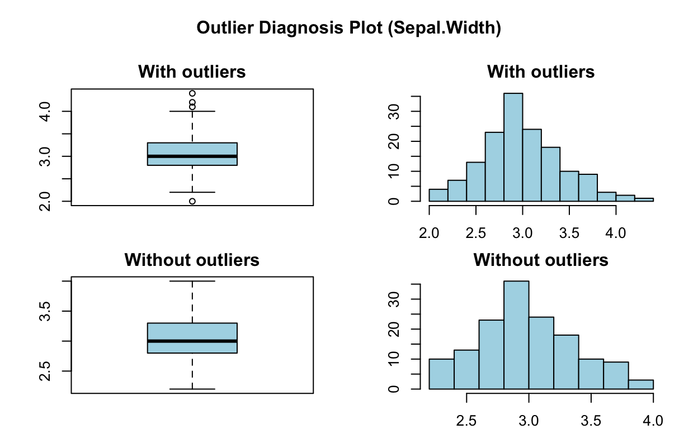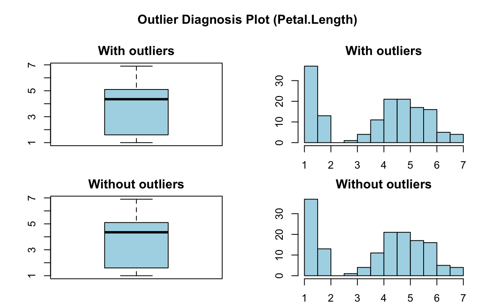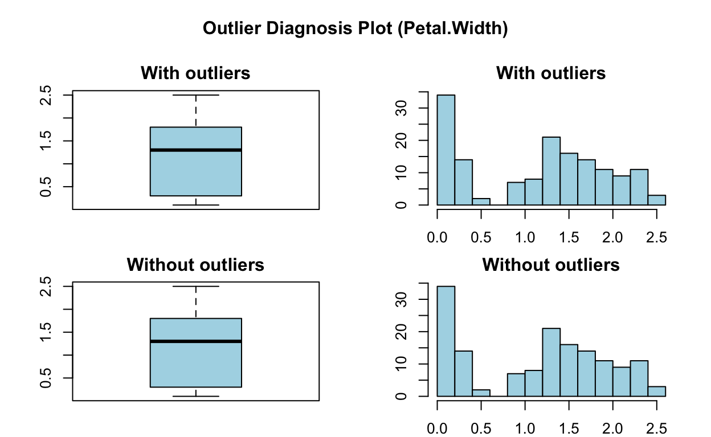
Visualize Missing Values
 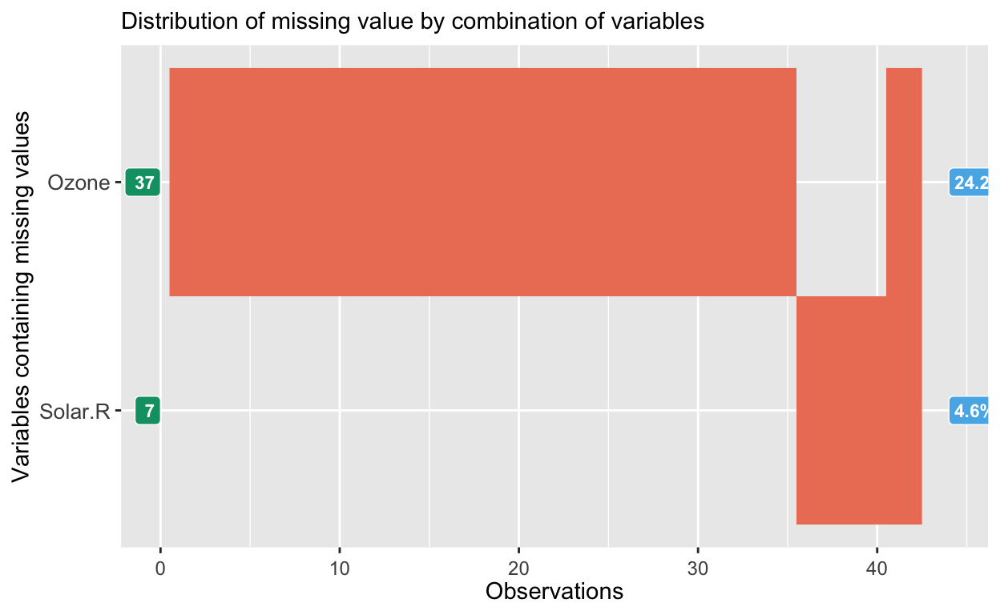
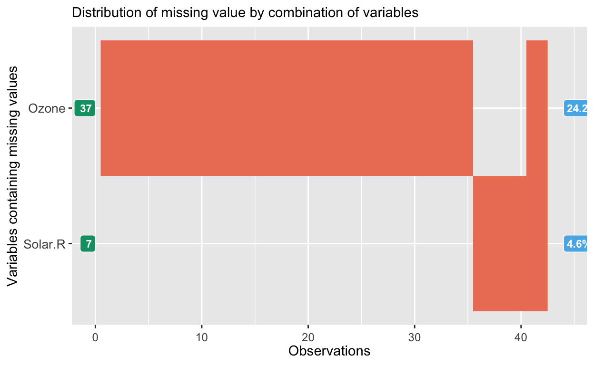
Reporting
Explore your data
Univariate EDA
# A tibble: 7 x 26
variable n na mean sd se_mean IQR skewness kurtosis
<chr> <int> <int> <dbl> <dbl> <dbl> <dbl> <dbl> <dbl>
1 carat 53940 0 5.73 1.12 0.00483 1.83 0.379 -0.618
2 depth 53940 0 5.73 1.12 0.00483 1.83 0.379 -0.618
3 table 53940 0 5.73 1.12 0.00483 1.83 0.379 -0.618
4 price 53940 0 5.73 1.12 0.00483 1.83 0.379 -0.618
5 x 53940 0 5.73 1.12 0.00483 1.83 0.379 -0.618
6 y 53940 0 5.73 1.12 0.00483 1.83 0.379 -0.618
7 z 53940 0 5.73 1.12 0.00483 1.83 0.379 -0.618
# … with 17 more variables: p00 <dbl>, p01 <dbl>, p05 <dbl>,
# p10 <dbl>, p20 <dbl>, p25 <dbl>, p30 <dbl>, p40 <dbl>, p50 <dbl>,
# p60 <dbl>, p70 <dbl>, p75 <dbl>, p80 <dbl>, p90 <dbl>, p95 <dbl>,
# p99 <dbl>, p100 <dbl># A tibble: 30 x 3
var1 var2 coef_corr
<fct> <fct> <dbl>
1 Solar.R Ozone 0.348
2 Wind Ozone -0.602
3 Temp Ozone 0.698
4 Month Ozone 0.165
5 Day Ozone -0.0132
6 Ozone Solar.R 0.348
7 Wind Solar.R -0.0568
8 Temp Solar.R 0.276
9 Month Solar.R -0.0753
10 Day Solar.R -0.150
# … with 20 more rows
Normality Test
# A tibble: 4 x 4
vars statistic p_value sample
<chr> <dbl> <dbl> <dbl>
1 Sepal.Length 0.976 1.02e- 2 150
2 Sepal.Width 0.985 1.01e- 1 150
3 Petal.Length 0.876 7.41e-10 150
4 Petal.Width 0.902 1.68e- 8 150# A tibble: 12 x 5
variable Species statistic p_value sample
<chr> <fct> <dbl> <dbl> <dbl>
1 Sepal.Length setosa 0.978 0.460 50
2 Sepal.Length versicolor 0.978 0.465 50
3 Sepal.Length virginica 0.971 0.258 50
4 Sepal.Width setosa 0.972 0.272 50
5 Sepal.Width versicolor 0.974 0.338 50
6 Sepal.Width virginica 0.967 0.181 50
7 Petal.Length setosa 0.955 0.0548 50
8 Petal.Length versicolor 0.966 0.158 50
9 Petal.Length virginica 0.962 0.110 50
10 Petal.Width setosa 0.800 0.000000866 50
11 Petal.Width versicolor 0.948 0.0273 50
12 Petal.Width virginica 0.960 0.0870 50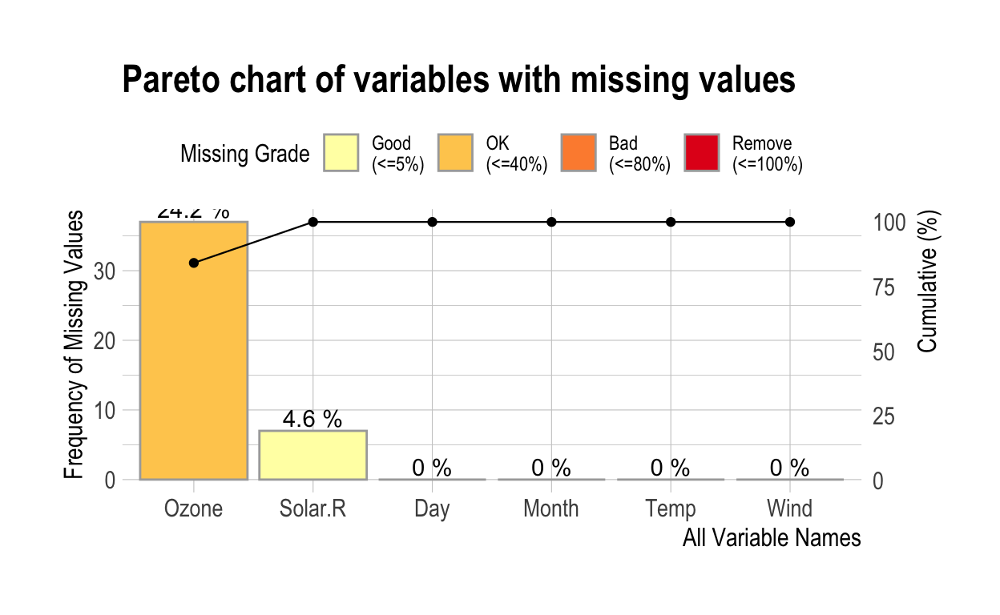
 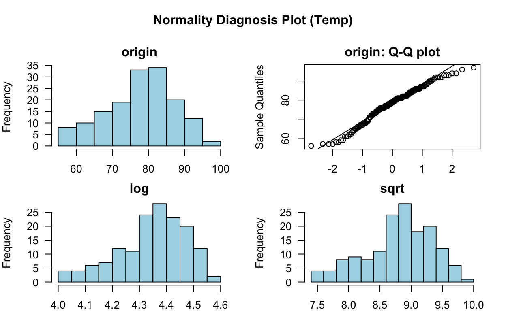
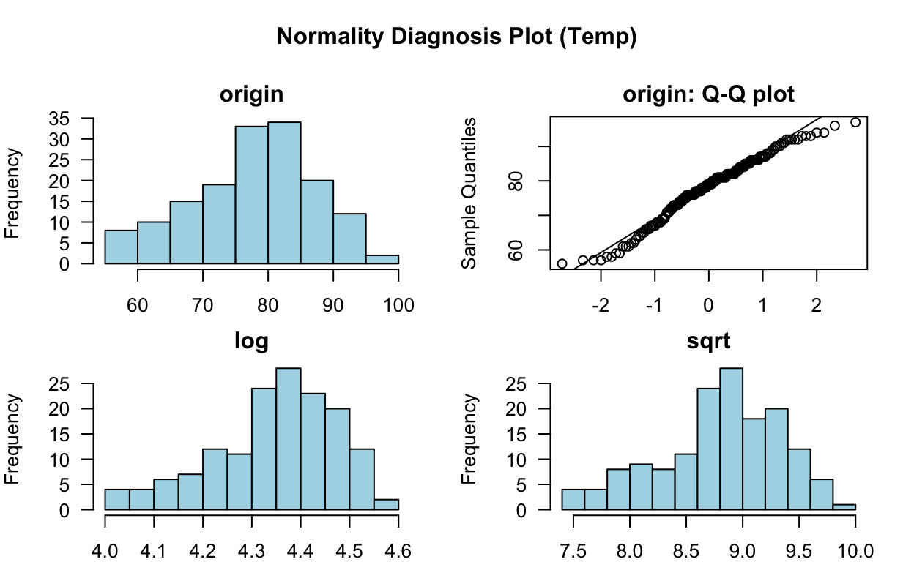

Transform your data
Derive new variables, impute missing values, impute outliers or perform variable transformations.
Find Variables
[1] 1 2[1] 1 5 6 8 9 10[1] 1 6 9 10Imputation
* Impute missing values based on Recursive Partitioning and Regression Trees
- method : rpart
* Information of Imputation (before vs after)
Original Imputation
n 116.000000 153.000000
na 37.000000 0.000000
mean 42.129310 41.947697
sd 32.987885 31.135713
se_mean 3.062848 2.517173
IQR 45.250000 41.812500
skewness 1.241796 1.228322
kurtosis 1.290303 1.320732
p00 1.000000 1.000000
p01 4.300000 5.040000
p05 7.750000 9.000000
p10 11.000000 12.084211
p20 14.000000 16.000000
p25 18.000000 20.000000
p30 20.000000 22.600000
p40 23.000000 26.812500
p50 31.500000 28.000000
p60 39.000000 39.000000
p70 49.500000 49.571429
p75 63.250000 61.812500
p80 73.000000 65.600000
p90 87.000000 90.288889
p95 108.500000 97.000000
p99 133.050000 128.240000
p100 168.000000 168.000000
iter imp variable
1 1 Ozone Solar.R
1 2 Ozone Solar.R
1 3 Ozone Solar.R
1 4 Ozone Solar.R
1 5 Ozone Solar.R
2 1 Ozone Solar.R
2 2 Ozone Solar.R
2 3 Ozone Solar.R
2 4 Ozone Solar.R
2 5 Ozone Solar.R
3 1 Ozone Solar.R
3 2 Ozone Solar.R
3 3 Ozone Solar.R
3 4 Ozone Solar.R
3 5 Ozone Solar.R
4 1 Ozone Solar.R
4 2 Ozone Solar.R
4 3 Ozone Solar.R
4 4 Ozone Solar.R
4 5 Ozone Solar.R
5 1 Ozone Solar.R
5 2 Ozone Solar.R
5 3 Ozone Solar.R
5 4 Ozone Solar.R
5 5 Ozone Solar.R* Information of Imputation (before vs after)
Original Imputation
n 116.000000 153.000000
na 37.000000 0.000000
mean 42.129310 41.018301
sd 32.987885 29.552490
se_mean 3.062848 2.389177
IQR 45.250000 31.000000
skewness 1.241796 1.422258
kurtosis 1.290303 2.276348
p00 1.000000 1.000000
p01 4.300000 5.040000
p05 7.750000 9.000000
p10 11.000000 12.200000
p20 14.000000 17.760000
p25 18.000000 20.000000
p30 20.000000 22.600000
p40 23.000000 28.000000
p50 31.500000 33.400000
p60 39.000000 39.080000
p70 49.500000 45.400000
p75 63.250000 51.000000
p80 73.000000 63.600000
p90 87.000000 83.600000
p95 108.500000 97.000000
p99 133.050000 128.240000
p100 168.000000 168.000000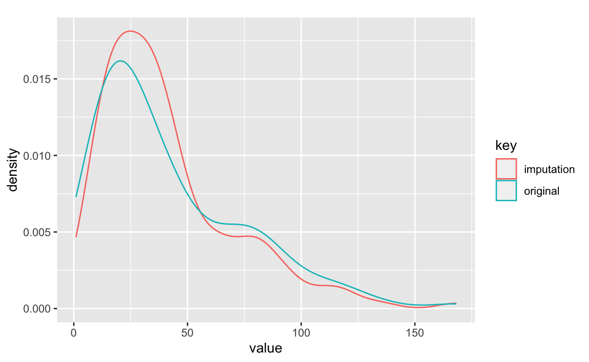
Impute missing values with median
* Information of Imputation (before vs after)
Original Imputation
n 116.000000 153.000000
na 37.000000 0.000000
mean 42.129310 39.558824
sd 32.987885 29.054449
se_mean 3.062848 2.348913
IQR 45.250000 25.000000
skewness 1.241796 1.626837
kurtosis 1.290303 2.911610
p00 1.000000 1.000000
p01 4.300000 5.040000
p05 7.750000 9.000000
p10 11.000000 12.200000
p20 14.000000 18.000000
p25 18.000000 21.000000
p30 20.000000 23.000000
p40 23.000000 31.500000
p50 31.500000 31.500000
p60 39.000000 31.500000
p70 49.500000 39.400000
p75 63.250000 46.000000
p80 73.000000 60.200000
p90 87.000000 81.600000
p95 108.500000 97.000000
p99 133.050000 128.240000
p100 168.000000 168.000000
Impute outliers with capping
* Information of Imputation (before vs after)
Original Imputation
n 5.394000e+04 5.394000e+04
na 0.000000e+00 0.000000e+00
mean 7.979397e-01 7.820515e-01
sd 4.740112e-01 4.319721e-01
se_mean 2.040954e-03 1.859946e-03
IQR 6.400000e-01 6.400000e-01
skewness 1.116646e+00 6.989600e-01
kurtosis 1.256635e+00 -4.905322e-01
p00 2.000000e-01 2.000000e-01
p01 2.400000e-01 2.400000e-01
p05 3.000000e-01 3.000000e-01
p10 3.100000e-01 3.100000e-01
p20 3.500000e-01 3.500000e-01
p25 4.000000e-01 4.000000e-01
p30 4.200000e-01 4.200000e-01
p40 5.300000e-01 5.300000e-01
p50 7.000000e-01 7.000000e-01
p60 9.000000e-01 9.000000e-01
p70 1.010000e+00 1.010000e+00
p75 1.040000e+00 1.040000e+00
p80 1.130000e+00 1.130000e+00
p90 1.510000e+00 1.510000e+00
p95 1.700000e+00 1.700000e+00
p99 2.180000e+00 1.740000e+00
p100 5.010000e+00 2.000000e+00
Binning

levels freq rate
1 LQ1 83 0.542483660
2 UQ1 23 0.150326797
3 LQ3 9 0.058823529
4 UQ3 1 0.006535948
5 <NA> 37 0.241830065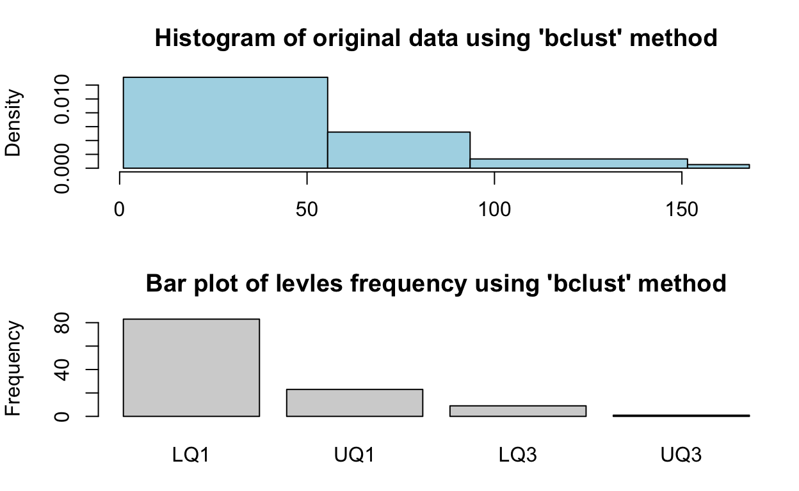
Transformation
[1] -0.03423409 -0.18580489 -0.91334473 -0.73145977 NA
[6] -0.42831817 -0.57988897 -0.70114561 -1.03460136 NA
[11] -1.06491552 -0.79208809 -0.94365889 -0.85271641 -0.73145977
[16] -0.85271641 -0.24643321 -1.09522968 -0.36768985 -0.94365889
[21] -1.24680048 -0.94365889 -1.15585800 -0.30706153 NA
[26] NA NA -0.57988897 0.08702254 2.20901373
[31] -0.15549073 NA NA NA NA
[36] NA NA -0.39800401 NA 0.87519070
[41] -0.09486241 NA NA -0.57988897 NA
[46] NA -0.64051729 -0.15549073 -0.67083145 -0.91334473
[51] -0.88303057 NA NA NA NA
[56] NA NA NA NA NA
[61] NA 2.81529692 0.20827918 -0.30706153 NA
[66] 0.66299158 -0.06454825 1.05707566 1.66335885 1.66335885
[71] 1.29958893 NA -0.97397305 -0.45863233 NA
[76] -1.06491552 0.17796502 -0.21611905 0.57204910 1.11770398
[81] 0.63267742 -0.79208809 NA NA 1.14801813
[86] 1.99681461 -0.67083145 0.29922166 1.20864645 0.23859334
[91] 0.66299158 0.51142078 -0.09486241 -1.00428721 -0.79208809
[96] 1.08738982 -0.21611905 0.72361990 2.42121284 1.42084557
[101] 2.05744293 NA NA 0.05670838 -0.42831817
[106] 0.69330574 NA -0.61020313 0.51142078 -0.57988897
[111] -0.33737569 0.05670838 -0.64051729 -1.00428721 NA
[116] 0.08702254 3.81566419 0.93581902 NA 1.02676150
[121] 2.29995620 1.26927477 1.29958893 1.63304469 1.08738982
[126] 0.93581902 1.48147389 0.14765086 -0.30706153 -0.67083145
[131] -0.57988897 -0.64051729 -0.54957481 0.05670838 -0.64051729
[136] -0.42831817 -1.00428721 -0.88303057 0.11733670 -0.73145977
[141] -0.88303057 -0.54957481 -0.79208809 -0.88303057 -0.57988897
[146] -0.18580489 -1.06491552 -0.85271641 -0.36768985 NA
[151] -0.85271641 -0.73145977 -0.67083145
attr(,"method")
[1] "zscore"
attr(,"origin")
[1] 41 36 12 18 NA 28 23 19 8 NA 7 16 11 14 18 14
[17] 34 6 30 11 1 11 4 32 NA NA NA 23 45 115 37 NA
[33] NA NA NA NA NA 29 NA 71 39 NA NA 23 NA NA 21 37
[49] 20 12 13 NA NA NA NA NA NA NA NA NA NA 135 49 32
[65] NA 64 40 77 97 97 85 NA 10 27 NA 7 48 35 61 79
[81] 63 16 NA NA 80 108 20 52 82 50 64 59 39 9 16 78
[97] 35 66 122 89 110 NA NA 44 28 65 NA 22 59 23 31 44
[113] 21 9 NA 45 168 73 NA 76 118 84 85 96 78 73 91 47
[129] 32 20 23 21 24 44 21 28 9 13 46 18 13 24 16 13
[145] 23 36 7 14 30 NA 14 18 20
attr(,"class")
[1] "transform" "numeric" 
Reporting